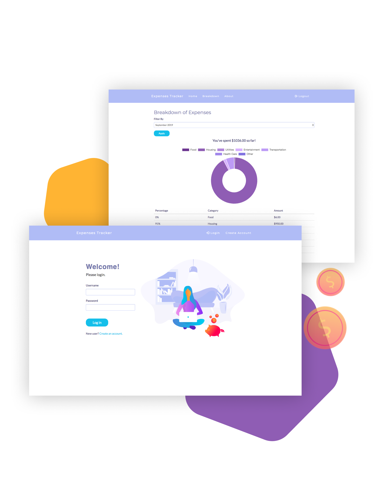

A web-based application for tracking and analyzing your spending

Expenses Tracker is a web-based application that allows users to manage their expenses, creating the extended database for tracking financial flows or changes and getting comprehensive statistics.
Expenses Tracker aims at helping people keep track of their budget, analyze their spending habits, and identify the areas of improvement for financial success.
This project has been developed in a small team with the purpose of exploring and learning a particular web technology. My team and I chose to evaluate Flask web framework for this task. We conducted research about the framework and constructed an expenses tracking web application that illustrates the capabilities of Flask framework.